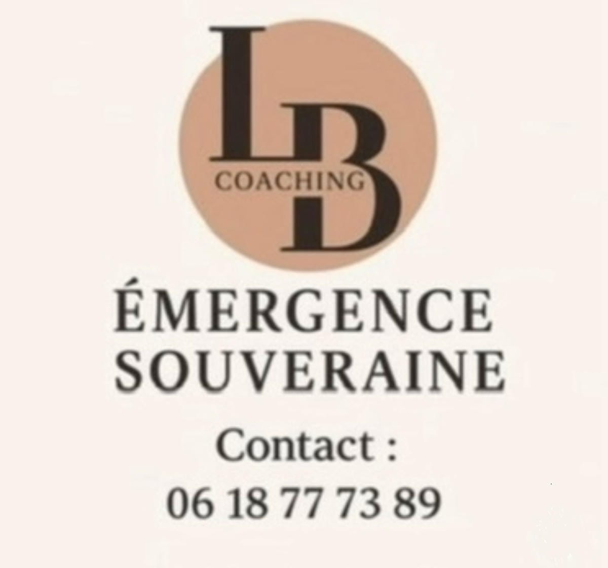

“Comprendre ce qui se passe en vous, c’est déjà commencer à reprendre du pouvoir.”
Quand le corps ralentit brutalement, ce n’est pas forcément une faiblesse. C’est parfois le signe d’un système nerveux épuisé d’avoir tenu trop longtemps.
Lire l’articleOn peut lire des livres, écouter des podcasts, regarder des vidéos motivation… et pourtant rester bloqué exactement au même endroit.
Et si le problème venait moins du manque de volonté que d’un système nerveux resté bloqué en mode survie ?
Lire l’articleSi vous ressentez le besoin de faire le point, de comprendre ce que vous traversez ou d’être accompagnée dans votre reconstruction, contactez-moi directement sur WhatsApp.
Me contacter sur WhatsApp